16/12/2024 — Bệnh nhân đau ngực nào cần chụp CT?
Bản dịch tiếng Việt của bài "Which Chest Pain patient needs a CT scan?" – Dr. Smith’s ECG Blog. Giữ nguyên toàn bộ 15 hình ảnh của bản gốc.
Bệnh nhân nào cần chụp CT?
Ca 1: Phụ nữ ở độ tuổi 20 bị đau ngực

Ca 2: Nam giới ở độ tuổi 50 bị đau ngực

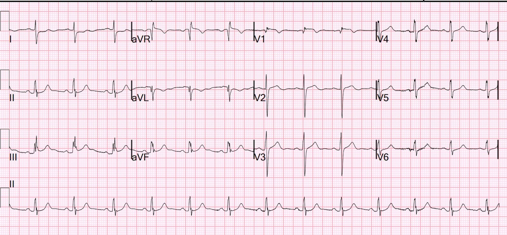
Ca 1
Một phụ nữ ở độ tuổi 20 đến khám lúc nửa đêm vì đau ngực dữ dội kiểu bóp nghẹt. Cơn đau bắt đầu 4 giờ trước khi đến viện, ban đầu âm ỉ, nhưng trở nên dữ dội và “không thể chịu nổi” 2 giờ trước khi đến viện. Cô tự đến khu phân loại (triage). Cô không khó thở và không có tiền sử bệnh lý. Huyết áp ban đầu là 203/124.
Cô được ghi điện tâm đồ này:

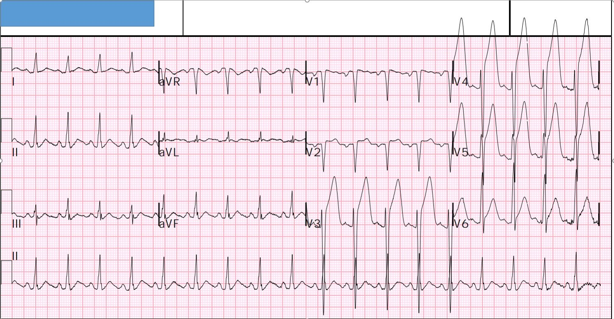
STEMI thành trước diện rộng rõ ràng
Cô nhanh chóng được chuyển vào khu hồi sức và phòng thông tim (cath lab) được kích hoạt.
Huyết áp tại khu hồi sức là 170/100.
Bác sĩ tim mạch muốn chụp CT động mạch chủ để loại trừ bóc tách, có lẽ một phần vì các trị số huyết áp rất cao, nhưng cũng vì người ta khó tin rằng một phụ nữ ở độ tuổi 20 lại có thể bị huyết khối động mạch vành cấp.
Họ cũng khuyến cáo truyền NTG tĩnh mạch, sau đó cô cho biết hết đau hoàn toàn. Không có điện tâm đồ nào được ghi sau khi hết đau.
Đây là điện tâm đồ ở phút thứ 25:

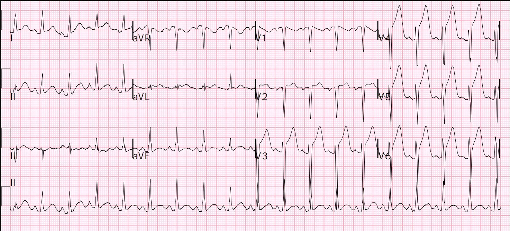
OMI STEMI dương tính (STEMI (+) OMI) vùng LAD rất nặng
Vì vậy CT đã được chụp, và dĩ nhiên cho thấy động mạch chủ bình thường. Nhưng nó cũng cho thấy một vùng thiếu máu cục bộ toàn bộ rất rộng ở vùng chi phối của LAD:
CT cho thấy vùng nhồi máu

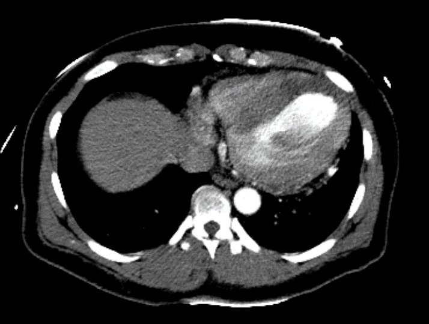
CT có tiêm thuốc cản quang, làm tăng tỷ trọng (trông trắng hơn). Cơ tim không có dòng máu tới thì không ngấm thuốc cản quang, do đó trông tối hơn.
Hãy xem vùng tối ở vách và mỏm tim, được đánh dấu bằng vòng tròn trắng:

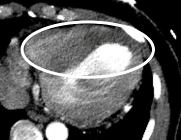
Troponin I độ nhạy cao (hs-troponin) lần đầu là 256 ng/L.
Chụp mạch vành
Thời gian từ cửa đến bóng (door-to-balloon) là 120 phút (quá dài) do mất thời gian chụp CT.
Chụp mạch vành cho thấy tắc 100% LAD đoạn giữa, được đặt stent phủ thuốc (DES) với kết quả chụp mạch rất tốt. Đây là mảng xơ vữa nứt vỡ kèm huyết khối. Không phải SCAD (bóc tách động mạch vành tự phát)
Troponin I cao nhất là 37,000 ng/L, nhưng không được đo đến lúc đạt đỉnh.
Siêu âm tim:
–Kích thước buồng thất trái bình thường, thành tim dày nhẹ đến vừa, và rối loạn chức năng tâm thu thất trái mức độ vừa.
–Phân suất tống máu thất trái ước tính là 37%. (nếu cô không hồi phục được nhiều trong những tuần tiếp theo, đó là một lượng cơ tim mất đi rất lớn)
–Rối loạn vận động thành khu trú - thành trước đoạn giữa và đoạn mỏm, vách đoạn mỏm, thành trước bên đoạn mỏm, thành dưới đoạn mỏm, và mỏm tim, giảm động đến vô động.
Quan trọng:
STEMI thành trước do bóc tách động mạch chủ là cực kỳ hiếm. Và hầu như tất cả các trường hợp đó đều có thể phát hiện bằng siêu âm tại giường.
Kết luận: bạn có thể dành vài phút tìm bóc tách bằng siêu âm tại giường, nhưng khi đã là STEMI rõ ràng, ĐỪNG phí thời gian chụp CT.
Ca 2
Một nam giới ở độ tuổi 50, đã vài năm không đi khám bệnh, được xe cấp cứu đưa đến khoa cấp cứu với lý do chính là đau ngực.
Đây là điện tâm đồ trước viện:

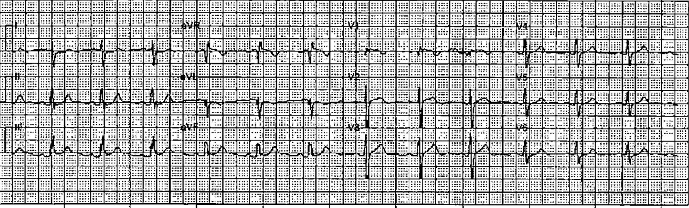
Có ST chênh lên (STE) tối thiểu ở các chuyển đạo dưới kèm ST chênh xuống (STD) soi gương ở aVL, và cũng có STE tối thiểu ở chuyển đạo V1.
Hình ảnh này rất gợi ý OMI, nhưng chưa đủ để chẩn đoán.
Queen of Hearts: “Phát hiện STEMI hoặc tương đương STEMI” (tức là “phát hiện OMI”)
Queen không mấy khi sai, vậy có lẽ đây là OMI?
Bệnh sử
Bệnh nhân than đau ngực 24 giờ, khởi phát đột ngột, tính chất nhói như dao đâm. Cơn đau bắt đầu từ ngày hôm trước và bắt đầu ở bên trái mặt, lan xuống cổ, rồi khu trú chủ yếu ở ngực trước khi lan ra sau lưng và xuống chi dưới bên trái. Cơn đau kéo dài suốt đêm (ít nhất 18 giờ), và không có gì làm đau giảm hay tăng lên. Anh chưa từng bị cơn đau tương tự lúc nghỉ hay khi gắng sức. Anh cho biết mức đau ngực 9/10 tại thời điểm thăm khám. Không khó thở. Nôn 3 lần trong đêm, hiện không còn buồn nôn. Anh phủ nhận tiền sử tăng huyết áp, rối loạn lipid máu, đái tháo đường, hút thuốc lá. Anh không dùng thuốc gì thường xuyên.
Dấu hiệu sinh tồn bình thường.
Một điện tâm đồ được ghi tại khoa cấp cứu (ED):

Rất giống
ST chênh lên nhẹ ở các chuyển đạo II, III, aVF kèm thay đổi soi gương ở các chuyển đạo bên, cùng với ST chênh lên ở V1 làm lo ngại nhồi máu thất phải (RVMI).
Lần này Queen of Hearts đọc: Không có STEMI hay tương đương STEMI. (Thú vị!)
Troponin I độ nhạy cao lần đầu là > 60,000 ng/L
Bác sĩ tim mạch được mời hội chẩn và bác sĩ nội trú chuyên khoa tim mạch (fellow) bắt mạch quay hai bên, thấy rằng mạch hai bên rất không đối xứng.
Họ khuyến cáo chụp CT động mạch chủ.
Đây là kết quả:

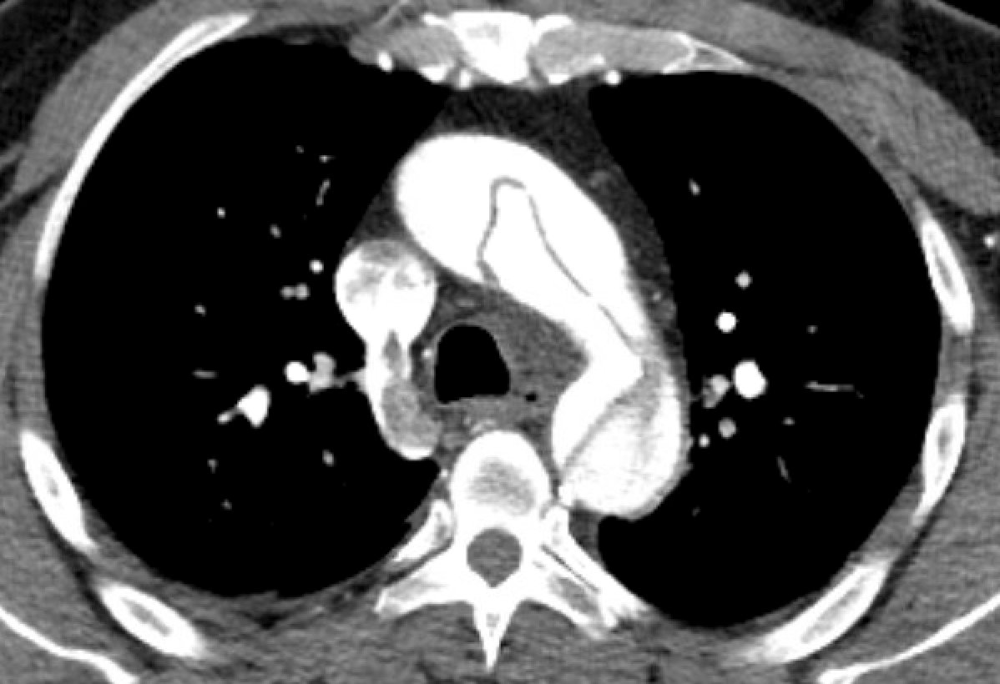
Bóc tách động mạch chủ típ A
Vì sao troponin tăng cao đến vậy? Và vì sao điện tâm đồ cho thấy những dấu hiệu tinh tế của OMI?
Hãy xem ở đây, chỗ bóc tách rất gần lỗ xuất phát (ostium) của RCA. Phần lớn các trường hợp bóc tách gây thiếu máu cục bộ mạch vành là lan vào lỗ xuất phát của RCA
(“ostium” = vị trí xuất phát của mạch máu).

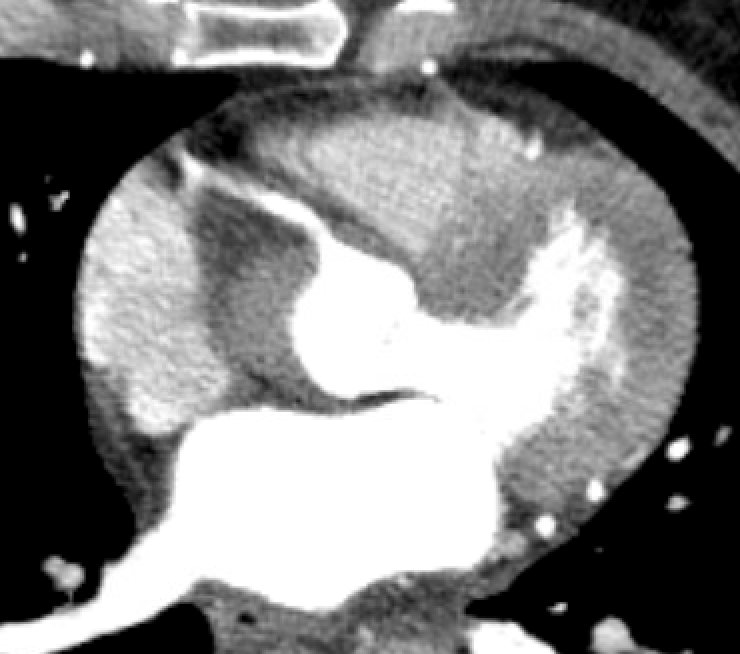
Đi từ phía trên bên trái ra xa hơn nữa về phía trên bên trái là RCA, đang thông.
CT cho thấy bóc tách động mạch chủ típ A lan rộng, bắt đầu tại lỗ xuất phát của RCA và kéo dài đến tận động mạch chậu trái.
Troponin > 60,000 ng/L
Như vậy, lúc khởi phát bóc tách, gần như chắc chắn nó đã làm tắc RCA và gây ra OMI mà nay đã được tái tưới máu.
Như vậy, đây là tắc RCA ĐOẠN GẦN (tại lỗ xuất phát) gây ra OMI thất phải (RVMI, RVOMM) với ST chênh lên ở V1
Bóc tách có thể xé thủng qua vạt nội mạc và tái tưới máu lòng thật
Ở đây bạn có thể thấy một vùng cơ tim thiếu máu cục bộ:

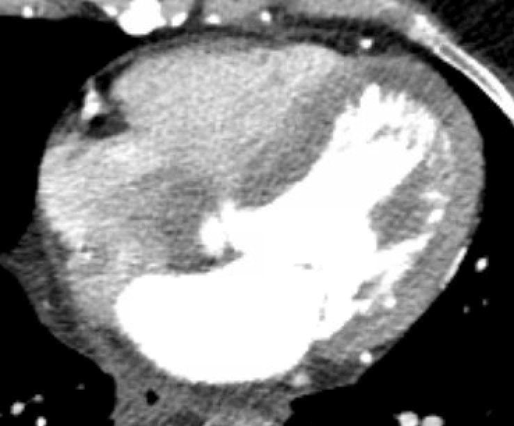
Các vùng tối là những vùng không được tưới máu (không ngấm thuốc cản quang). Phần lớn là dưới nội tâm mạc ở vách, mỏm tim, và cả thành bên, nhưng chủ yếu là thành sau (phía dưới hình)
Điều gì sẽ xảy ra nếu bệnh nhân này đã được kích hoạt phòng thông tim?
Điều đó có thể gây rắc rối. Nó sẽ làm chậm chẩn đoán và điều trị, và có lẽ sẽ hoàn toàn không đi đến được chẩn đoán đúng.
Có nhiều manh mối lâm sàng gợi ý bóc tách.
Mạch hai bên không đối xứng buộc phải chụp CT.
Nhưng nếu mạch hai bên đối xứng thì sao? Bệnh sử bất thường cũng buộc phải chụp CT.
Nhưng nếu bạn không có cả hai dấu hiệu trên thì sao?
Siêu âm
Đây là một cách dễ dàng để tìm bóc tách khi bạn nghĩ là có OMI nhưng muốn chắc chắn rằng đó không phải là bóc tách.
Siêu âm tại giường do bác sĩ cấp cứu thực hiện, khảo sát quai động mạch chủ qua hõm trên xương ức:

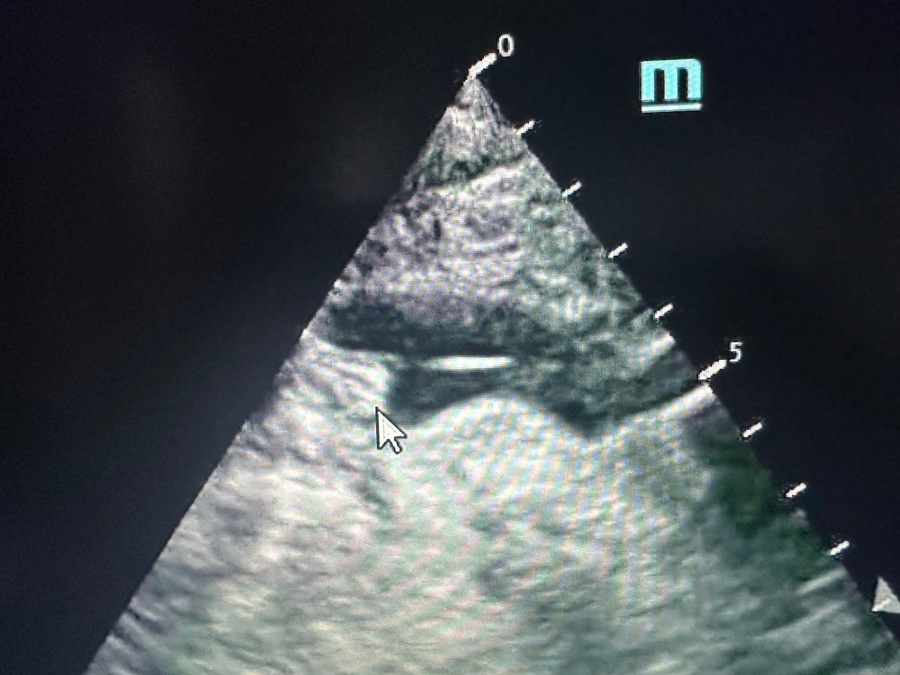
Đường sáng ở giữa lòng động mạch chủ là vạt bóc tách. Điều này rất dễ thấy.
Bệnh nhân này có triệu chứng lan tận xuống chân, nên mặt cắt ổ bụng nhiều khả năng sẽ cho thấy điều gì đó. Đây là mặt cắt ngang động mạch chủ bụng:

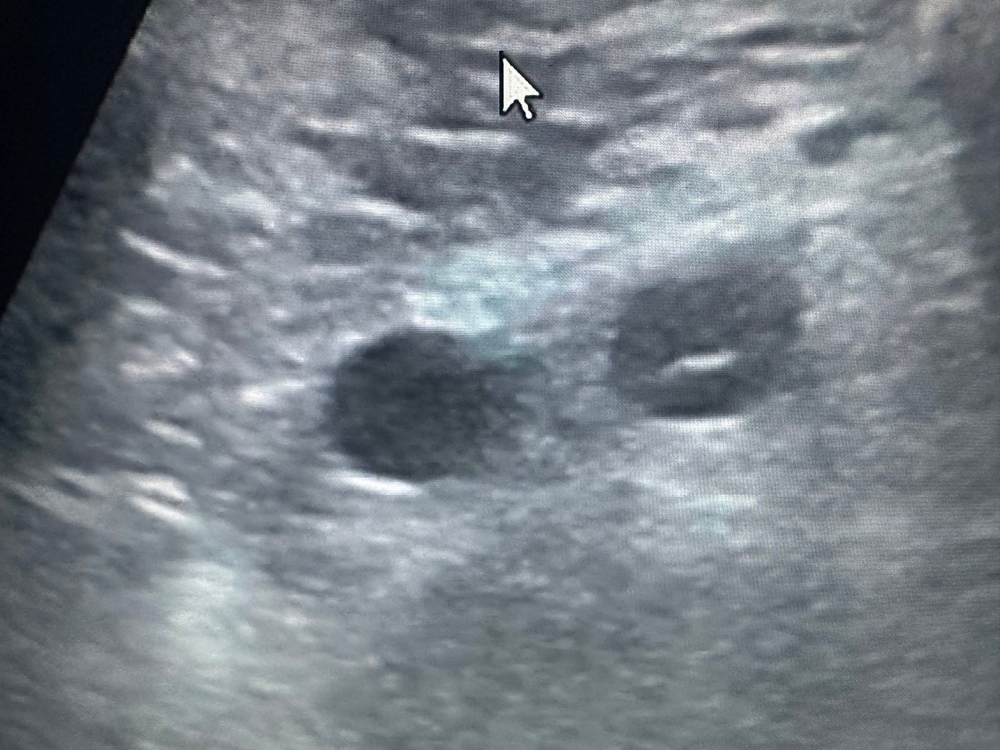
Bên trái là tĩnh mạch chủ dưới (IVC), bên phải là động mạch chủ với một vạt bóc tách vắt ngang qua giữa lòng mạch.
Những điểm cần học:
1. Khi điện tâm đồ đã chẩn đoán OMI chắc chắn như đinh đóng cột (slam dunk), thì chụp CT gần như luôn là lãng phí cơ tim quý giá (thời gian, vì thời gian là cơ tim).
2. Dùng siêu âm tại giường để tìm bóc tách thì không phải là lãng phí thời gian
3. Bóc tách thì hiếm. OMI thì phổ biến. Xác suất tiền nghiệm là quan trọng.
4. Phần lớn bóc tách gây OMI là ở RCA
5. Chỉ ~1% STEMI là do bóc tách
6. Chỉ khoảng 5% bóc tách gây ra OMI
7. Hãy bắt mạch!
8. Khi có bệnh sử bất thường (“bắt đầu ở mặt, lan xuống chân”), hãy chú ý. Không phải mọi cảm giác khó chịu ở ngực đều giống nhau.
9. Phụ nữ trẻ vẫn bị nhồi máu cơ tim diện rộng, và điều tệ nhất khi bạn bị OMI là bạn lại là một phụ nữ trẻ: không ai tin rằng bạn bị OMI.
Một số y văn
1.3% STEMI là do bóc tách động mạch chủ.
Wang J-L, Chen C-C, Wang C-YW, Hsieh M-J, Chang S-H, Lee C-H, Chen D-Y, Hsieh I-C. Acute type A aortic dissection presenting as ST-segment elevation myocardial infarction referred for primary percutaneous coronary intervention. Acta Cardiol. Sin. [Internet]. 2016;32:265–272. Truy cập tại: https://www.ncbi.nlm.nih.gov/pmc/articles/PMC4884753/
Tỷ lệ mới mắc STEMI ở Mỹ là 100 trên 100,000 người mỗi năm (300,000 ca STEMI mỗi năm ở Mỹ)
Tỷ lệ mới mắc bóc tách động mạch chủ ở Mỹ là 3 trên 100,000 (có thể lên đến 6 trên 100,000)
Yin J, Liu F, Wang J, Yuan P, Wang S, Guo W. Aortic dissection: global epidemiology. Cardiol. Plus [Internet]. 2022;7:151–161. Truy cập tại: https://journals.lww.com/cardioplus/fulltext/2022/12000/aortic_dissection__global_epidemiology.1.aspx
5% bóc tách động mạch chủ gây ra STEMI, và phần lớn là tắc RCA. Khi do động mạch vành trái, đó là thân chung động mạch vành trái, và hiếm khi biểu hiện như STEMI thành trước
Kawahito K, Adachi H, Murata S-I, Yamaguchi A, Ino T. Coronary malperfusion due to type A aortic dissection: mechanism and surgical management. Ann. Thorac. Surg. [Internet]. 2003;76:1471–6; thảo luận 1476. Truy cập tại: https://www.sciencedirect.com/science/article/pii/S0003497503008993
Wang: Siêu âm tim qua thành ngực có độ nhạy 85% đối với bóc tách típ A.
Wang Y, Yu H, Cao Y, Wan Z. Early screening for aortic dissection with point-of-care ultrasound by emergency physicians: A prospective pilot study: A prospective pilot study. J. Ultrasound Med. [Internet]. 2020;39:1309–1315. Truy cập tại: https://onlinelibrary.wiley.com/doi/abs/10.1002/jum.15223
Bài tổng quan hay:
Loftus A, Abou-Arbid S, Marshall D, Suszanski J, Clark C. Resuscitative transesophageal echocardiography identifies aortic dissection intussusception as the cause of aVR STEMI. JEM Reports [Internet]. 2023;2:100029. Truy cập tại: https://www.sciencedirect.com/science/article/pii/S2773232023000251

===================================
BÌNH LUẬN CỦA TÔI, bởi KEN GRAUER, MD (16/12/2024):
===================================
Bài hôm nay giới thiệu 2 ca bệnh rất sâu sắc. Tôi tập trung Bình luận của tôi vào Ca #1. Phần bàn luận của Dr. Smith đã đề cập mọi khía cạnh của Ca #2 một cách hấp dẫn.
Về Ca #1:
- Thật sâu sắc khi thấy CTA động mạch chủ (Computed Tomography Angiography – chụp cắt lớp vi tính mạch máu) đã cho thấy rõ ràng đến thế vùng nhồi máu của bệnh nhân này — qua đó xác nhận chẩn đoán nhồi máu cơ tim cấp trước khi thông tim (dù lý do chính để chụp CTA động mạch chủ là nhằm loại trừ bóc tách động mạch chủ).
- Thật đáng khiêm tốn khi nhận ra rằng siêu âm tim tại giường cho thấy chức năng thất trái bình thường — trong khi siêu âm tim chính thức lại cho thấy phân suất tống máu giảm đáng kể kèm nhiều vùng rối loạn vận động thành khu trú. Độ chính xác của siêu âm tim tại giường rõ ràng phụ thuộc vào kỹ năng và kinh nghiệm của người làm — và đôi khi có thể khó loại trừ khả năng có WMA (Wall Motion Abnormality – rối loạn vận động thành) chỉ dựa vào siêu âm tim tại giường.
- Bệnh cảnh lâm sàng của bệnh nhân ở Ca #1 đủ tiêu chuẩn là tăng huyết áp cấp cứu (với khác biệt giữa tăng huyết áp “khẩn cấp” (urgency) so với “cấp cứu” (emergency) là có hay không có tổn thương cơ quan đích cấp — điều rõ ràng đã hiện diện khi có vùng nhồi máu cấp rộng).
- NTG (nitroglycerin) X3 ngậm dưới lưỡi chỉ có hiệu quả tối thiểu trong việc làm giảm CP (Chest Pain – đau ngực) của bệnh nhân này. Vì vậy — NTG tĩnh mạch được bắt đầu, và CP của bệnh nhân đã hết hoàn toàn (và có lẽ tình trạng tăng huyết áp rất cao của cô cũng cải thiện đáng kể)! Điều này đặt ra câu hỏi là tình trạng tăng huyết áp cấp cứu đã góp phần bao nhiêu vào cơn CP nặng kéo dài của bệnh nhân trước khi bắt đầu NTG tĩnh mạch — so với — nhồi máu cơ tim cấp đã góp phần bao nhiêu vào tình trạng tăng huyết áp nặng kéo dài của cô? (Xem bên dưới).
- Và — điện tâm đồ ban đầu của bệnh nhân này (mà tôi đã sao lại và đánh dấu trong Hình 1) cho thấy một số dấu hiệu thú vị (Xem bên dưới).
Tăng huyết áp khẩn cấp/cấp cứu và đau ngực (CP) tại khoa cấp cứu (ED):
Mặc dù khó có được dữ liệu chính xác — tăng huyết áp cấp cứu thực sự là hiếm (nhiều khả năng chiếm thấp hơn hẳn 1% số lượt khám tại khoa cấp cứu).
- Như đã nêu ở trên — sự hiện diện của tổn thương cơ quan đích cấp trong ca hôm nay (tức là nhồi máu cơ tim cấp) kèm theo tăng huyết áp kéo dài rõ rệt (huyết áp của bệnh nhân này có lúc vượt quá 200 mm Hg tâm thu và >110 mm Hg tâm trương) — khiến cô đủ tiêu chuẩn là tăng huyết áp cấp cứu thực sự (Janke và cs. — JAHA 5(12); 2016 — và — Cardiology Advisor — ngày 29 tháng Hai năm 2024). May mắn là — bệnh nhân hôm nay đáp ứng nhanh khi bắt đầu NTG tĩnh mạch.
- Không phải lúc nào người ta cũng nhận thấy rằng đau ngực là một trong những triệu chứng đi kèm thường gặp nhất của cơn tăng huyết áp khi đến khoa cấp cứu (xảy ra ở hơn một nửa số bệnh nhân tăng huyết áp khẩn cấp — và ở tỷ lệ còn cao hơn nữa ở những bệnh nhân tăng huyết áp cấp cứu trong nghiên cứu của Salkic và cs. — Mater Sociomed 26(1):12-16, 2014).
- ĐIỂM THEN CHỐT (PEARL): Ca #1 trong bài hôm nay minh họa tuyệt vời cho tác dụng hiệp đồng mà NTG tĩnh mạch có thể mang lại ở bệnh nhân đến khám vì CP nặng kèm phối hợp tăng huyết áp cấp cứu và nhồi máu cơ tim cấp.

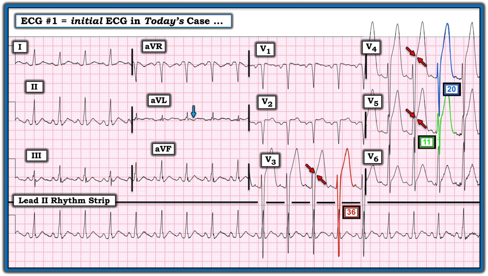
Điện tâm đồ ban đầu ở Ca #1:
Điện tâm đồ ở Hình 1 — cho thấy nhịp nhanh xoang tần số ~110/phút với biên độ QRS tăng rõ rệt và ST chênh lên rõ rệt ở các chuyển đạo trước ngực.
- Chúng tôi đã nhiều lần nhấn mạnh trên Dr. Smith’s ECG Blog rằng nhìn chung — không thường gặp nhịp nhanh trong nhồi máu cơ tim không biến chứng. Vì vậy — dấu hiệu nhịp nhanh xoang trong ca hôm nay cần ngay lập tức gợi ý rằng có thể còn điều gì khác đang diễn ra (mà trong ca hôm nay là cơn CP nặng và tình trạng tăng huyết áp cấp cứu của bệnh nhân).
Điện thế QRS tăng rõ rệt ở điện tâm đồ #1 (với sóng S ở chuyển đạo V3 sâu 36 mm — như được thể hiện ở phức bộ QRST viền ĐỎ trong Hình 1). Sóng S cực sâu này phù hợp với tình trạng tăng huyết áp nặng và thành thất trái dày lên trên siêu âm tim chính thức của bệnh nhân.
- Mức tăng biên độ sóng S như vậy khiến ban đầu tôi phải dừng lại để xem xét tính tương xứng (proportionality) giữa mức ST chênh lên ở các chuyển đạo trước ngực so với mức tăng điện thế ở các chuyển đạo trước ngực.
- Cặp mũi tên ĐỎ ở các chuyển đạo V3,V4,V5 đánh dấu chỗ mà tôi coi là điểm uốn xác định điểm J để đo mức ST chênh lên. Ngay cả ở chuyển đạo V3 (nơi sóng S sâu tới 36 mm) — mức ST chênh lên 8 mm tại điểm J vẫn tăng không tương xứng, và chỉ điểm nhồi máu cơ tim cấp ở bệnh nhân có CP nặng mới xuất hiện này.
- Độ sâu sóng S nhỏ hơn nhiều ở các chuyển đạo lân cận V4 và V5 — vốn cho thấy rõ ST chênh lên tại điểm J không tương xứng (lần lượt 12 mm và 9 mm ở chuyển đạo V4 và chuyển đạo V5) — so với độ sâu sóng S khiêm tốn hơn ở các chuyển đạo này (tức là 20 mm và 11 mm). Như Dr. Smith nhận định — toàn bộ hình ảnh điện tâm đồ ở Hình 1 chỉ ra STEMI thành trước đang tiến triển ở bệnh nhân tăng huyết áp cấp cứu này.
- Dù khó biết nên hiểu thế nào về hình dạng ST-T ở các chuyển đạo dưới — sóng T đảo ngược không phù hợp ở chuyển đạo aVL càng ủng hộ thêm chẩn đoán STEMI đang diễn ra.